1ติดตั้งและเปิดโหมดนักเรียน
- เปิดลิงก์ของแอปใน Safari (iPad) หรือ Chrome (แท็บเล็ต Android / คอมพิวเตอร์)
- iPad: แตะปุ่ม แชร์ (สี่เหลี่ยมมีลูกศรชี้ขึ้น) → เพิ่มไปยังหน้าจอโฮม · Android: เมนู ⋮ → ติดตั้งแอป
- เปิดแอปจากไอคอน “เส้นคิด” บนหน้าโฮมทุกครั้ง แอปจะเปิดเต็มจอและใช้ได้แม้ไม่มีอินเทอร์เน็ต
- ครั้งแรกจะมีหน้าแนะนำ แตะ ถัดไป หรือ ข้าม
- ที่หน้าหลัก ด้านซ้ายล่างมีสวิตช์ ใช้งานแบบ: ครู / นักเรียน → เลือก นักเรียน แถบเครื่องมือจะเรียบง่ายขึ้น (ซ่อนเครื่องมือที่ครูใช้ เช่น ฉายจอ อัดคลิปวิดีโอ จับเวลา ม่าน)
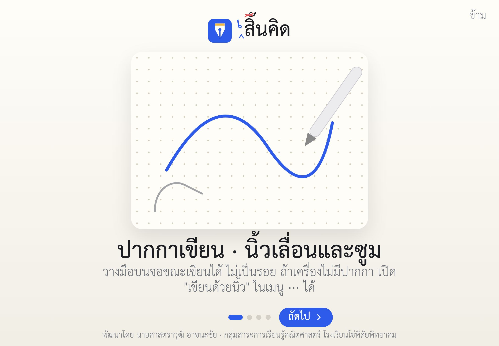
2หน้าหลัก: สมุดและโฟลเดอร์
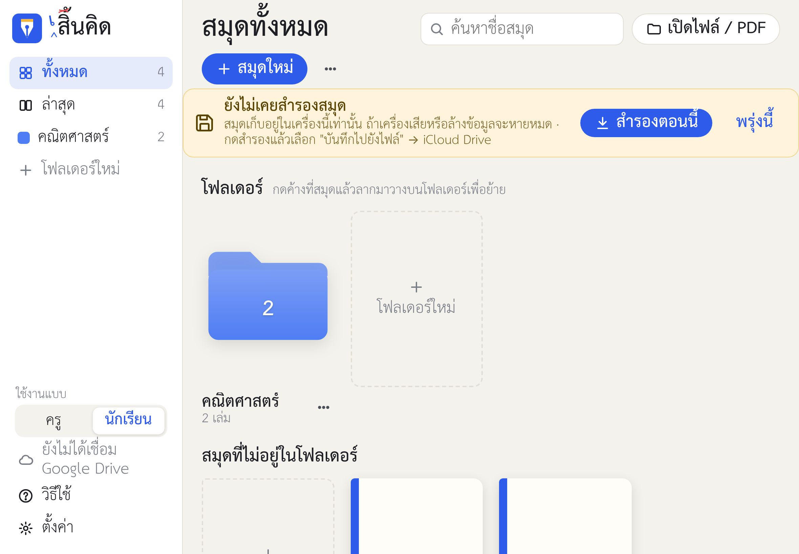
สร้างสมุดใหม่
- แตะ + สมุดใหม่ ตั้งชื่อ (เช่น “คณิตศาสตร์ ม.2”)
- เลือก พื้นหลัง (เปล่า / เส้น / ตาราง / จุด) ขนาด (A4 แนวตั้ง / แนวนอน) สีกระดาษ และ สีปก
- แตะ สร้างและเริ่มเขียน
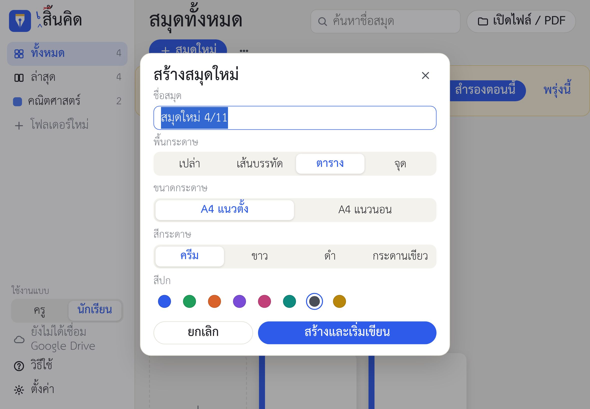
จัดการสมุด
แตะ ⋯ มุมขวาของสมุด (หรือกดค้างที่สมุด) จะมีเมนู เปลี่ยนชื่อ · ย้ายไปโฟลเดอร์ · ทำสำเนา · บันทึกเป็นไฟล์ในเครื่อง · ลบสมุด
โฟลเดอร์
แตะ + โฟลเดอร์ใหม่ ด้านซ้าย เพื่อจัดกลุ่มสมุดตามวิชา แตะ ⋯ ที่โฟลเดอร์เพื่อเปลี่ยนชื่อ/สี/ลบ (ลบโฟลเดอร์ สมุดข้างในไม่หาย)
เปิดไฟล์
แตะ เปิดไฟล์ / PDF เพื่อเปิดไฟล์ PDF ที่ครูส่งให้มาเขียนทับ (เช่น ใบงาน แบบฝึกหัด) หรือเปิดไฟล์สมุด .senkid.json ที่เคยสำรองไว้
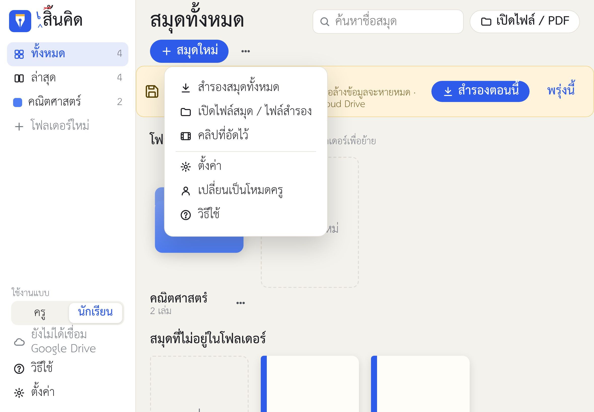
3รู้จักแถบเครื่องมือ
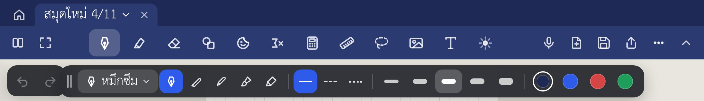
| ปุ่ม (ซ้าย → ขวา) | ทำอะไร |
|---|---|
| 🏠 คลังสมุด · แท็บชื่อสมุด | กลับหน้าหลัก · สลับสมุดที่เปิดอยู่ · ✕ ปิดแท็บ |
| ภาพย่อหน้า · พอดีหน้าจอ | เปิดแถบภาพย่อของทุกหน้าเพื่อกระโดดไปหน้าที่ต้องการ · ซูมให้เห็นทั้งหน้า |
| ปากกา · ไฮไลต์ · ยางลบ | เครื่องมือเขียนหลัก (ดูข้อ 4) |
| รูปทรงและลูกศร | วาดกล่อง วงกลม ลูกศร เส้นเชื่อม สำหรับทำแผนผัง (ข้อ 7) |
| สติกเกอร์ | แปะสติกเกอร์ข้อความและอีโมจิ (ข้อ 8) |
| คณิต | แทรกสมการ กราฟ ไม้โปรแทรกเตอร์ วงเวียน (ข้อ 9) |
| เครื่องคิดเลข · ไม้บรรทัด | เครื่องคิดเลขวิทยาศาสตร์ · ไม้บรรทัดวางบนกระดาษ (ข้อ 9–10) |
| บ่วงบาศ | วงล้อมสิ่งที่เขียนเพื่อย้าย ย่อขยาย หมุน คัดลอก ลบ (ข้อ 6) |
| แทรกรูปภาพ · กล่องข้อความ | ใส่รูปจากเครื่อง · พิมพ์ข้อความ (ข้อ 8) |
| เลเซอร์พอยเตอร์ | ชี้จุดบนกระดาษโดยไม่ทิ้งรอย |
| อัดเสียง | อัดเสียงอธิบายผูกกับสมุดเล่มนี้ (ข้อ 11) |
| เพิ่มหน้า · บันทึก · ส่งออก · ⋯ · ซ่อนแถบ | เพิ่มหน้า/แทรก PDF · บันทึกเป็นไฟล์ · ส่งงาน/ส่งออก PDF · เมนูเพิ่มเติม · โหมดนำเสนอ |
4การเขียน: ปากกา ไฮไลต์ ยางลบ
ใช้ ปากกา (Apple Pencil / สไตลัส) เขียน ส่วน นิ้ว ใช้เลื่อนหน้าและซูม วางมือบนจอขณะเขียนได้ ไม่เป็นรอย
ปากกา
- แถวล่างเลือก ชนิดปากกา 5 แบบ: หมึกซึม (หนาบางตามน้ำหนัก) · ลูกลื่น (เส้นสม่ำเสมอ) · ดินสอ · พู่กัน · มาร์กเกอร์
- รูปแบบเส้น: ทึบ / ประ / จุด
- ขนาด 5 ระดับ และ สี 8 สีโปรด แตะ 🌈 เพื่อเลือกสีอื่น
- แตะปากกาที่เลือกอยู่ ซ้ำอีกครั้ง จะเปิดแผงตั้งค่าเต็ม: วงล้อสี ความเข้ม ขนาดละเอียด และขนาดลัด
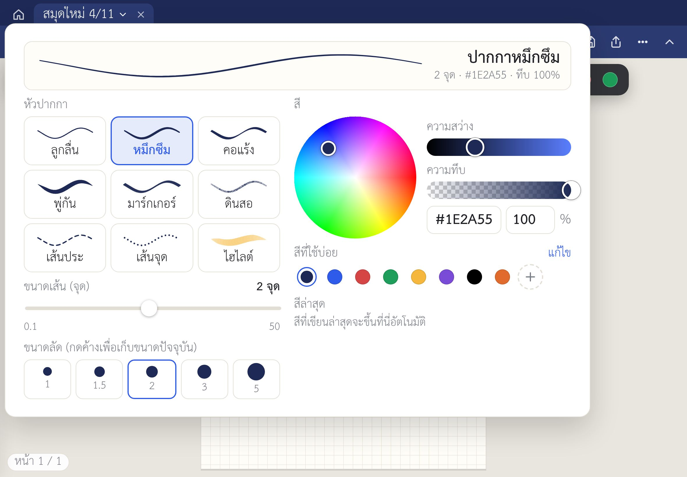
แก้ไข/เรียงสีโปรด
แตะปุ่ม ✎ ท้ายแถวสี: ลากสีเพื่อเรียงลำดับ แตะสีเพื่อแก้ (วงล้อหรือรหัสสี) × ลบ + เพิ่ม และ “คืนค่าสีเริ่มต้น”
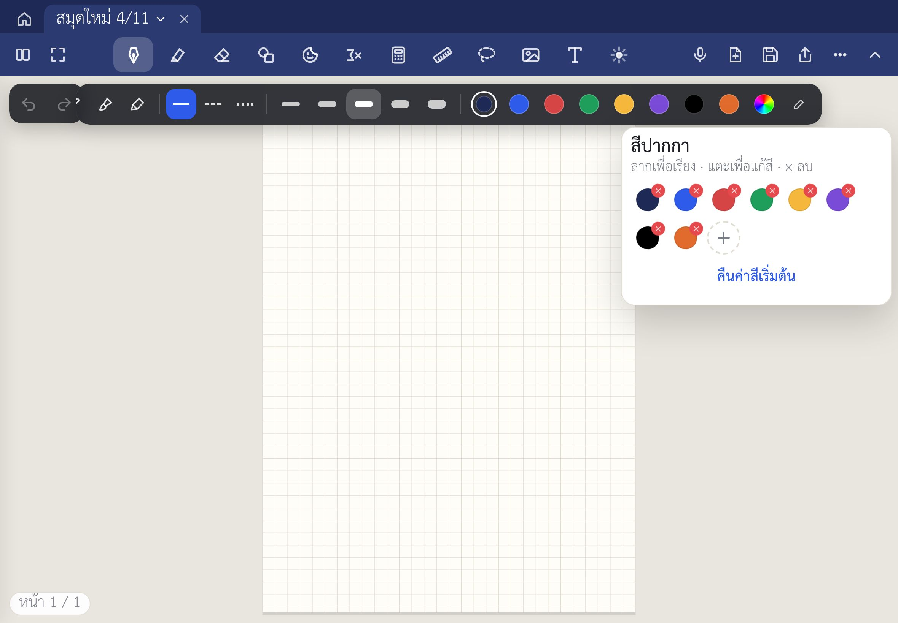
ไฮไลต์
เส้นโปร่งใสสำหรับเน้นข้อความ มีสีโปรดแยกจากปากกา เปิด เส้นตรง ในแผงตั้งค่าเพื่อให้ไฮไลต์เป็นแถบตรงเสมอ
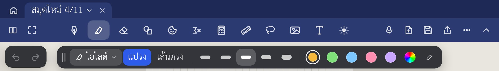
ยางลบ
- ลบทั้งเส้น: แตะโดนเส้นไหน เส้นนั้นหายทั้งเส้น (เร็ว เหมาะกับลบตัวหนังสือ)
- ถู (ลบส่วนที่โดน): ลบเฉพาะบริเวณที่ถู ปรับขนาดได้
- ขีดฆ่าเพื่อลบ: ไม่ต้องเปลี่ยนเครื่องมือ แค่ใช้ปากกาขีดไปมาซ้ำ ๆ ทับสิ่งที่ต้องการลบ (ปิดได้ในตั้งค่า)
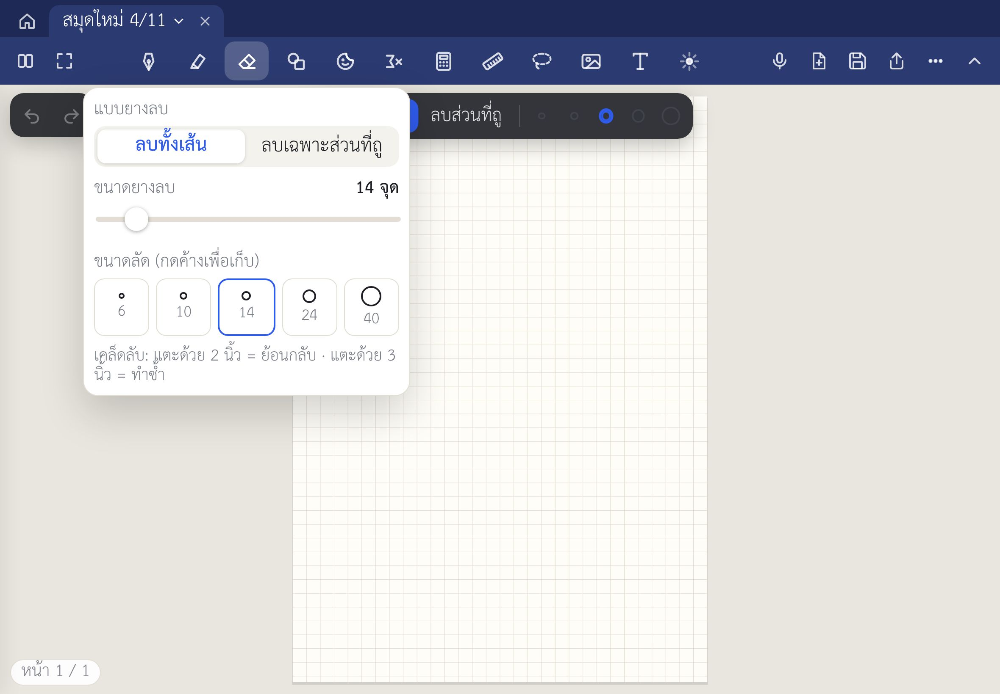
วาดเส้นตรงและรูปทรงอัตโนมัติ
ขีดเส้นแล้ว กดปากกาค้างไว้ครึ่งวินาที ก่อนยก เส้นจะกลายเป็นเส้นตรง หรือรูปทรงสวย ๆ (วงกลม สี่เหลี่ยม สามเหลี่ยม ลูกศร) ตามที่วาด ถ้าอยากได้เส้นโค้งจริง ๆ ยกปากกาทันทีไม่ต้องค้าง
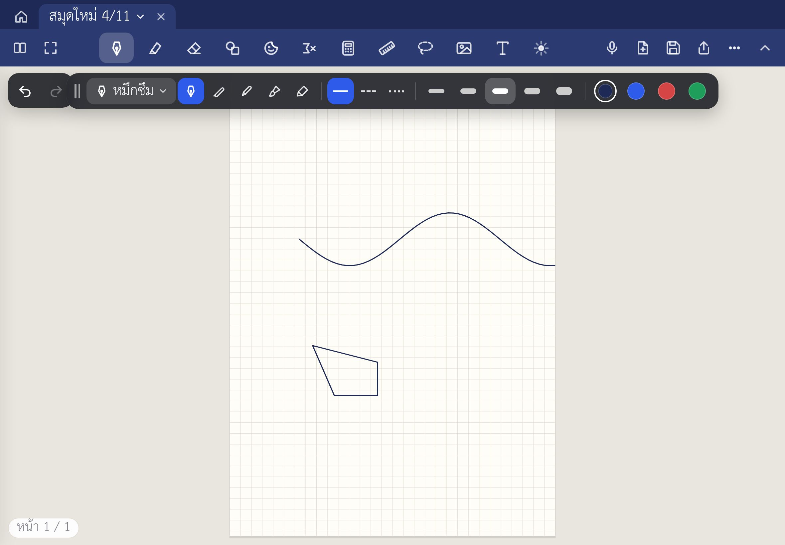
5ท่านิ้วที่ต้องรู้
| ท่า | ผล |
|---|---|
| นิ้วเดียวลาก | เลื่อนหน้า |
| สองนิ้วบีบ/ถ่าง | ซูมเข้า–ออก (บีบจนสุดจะพอดีหน้าจอ) |
| แตะจอด้วย 2 นิ้ว | ย้อนกลับ (Undo) |
| แตะจอด้วย 3 นิ้ว | ทำซ้ำ (Redo) |
| แตะรูป/สติกเกอร์/ข้อความ 1 ครั้ง | เลือกวัตถุนั้น (มีจุดมุมย่อขยาย จุดหมุน และเมนู) |
| สองนิ้วบนวัตถุที่เลือกอยู่ | บีบ = ย่อขยาย · บิด = หมุน |
| แตะเส้นรูปทรงที่วาดไว้ | เปิดแถบแก้รูปทรง (สี เติมสี มุมมน) |
| ปากกาแตะกระดาษสั้น ๆ ตอนใช้กล่องข้อความ | สร้างกล่องข้อความใหม่ตรงนั้น |
6เลือก ย้าย ย่อขยาย (บ่วงบาศ)
- แตะเครื่องมือ บ่วงบาศ แล้วใช้ปากกาวาดวงล้อมสิ่งที่ต้องการ (เส้น รูป ข้อความ ได้หลายอย่างพร้อมกัน)
- ลากข้างในกรอบเพื่อ ย้าย · ลากจุดมุมเพื่อ ย่อขยาย · ลากจุดด้านบนเพื่อ หมุน
- แถบด้านบนมี เปลี่ยนสี · ทำสำเนา · คัดลอก · ตัด · ลบ · เสร็จ (คัดลอกแล้วไปวางหน้าอื่นได้จากปุ่ม “วาง”)
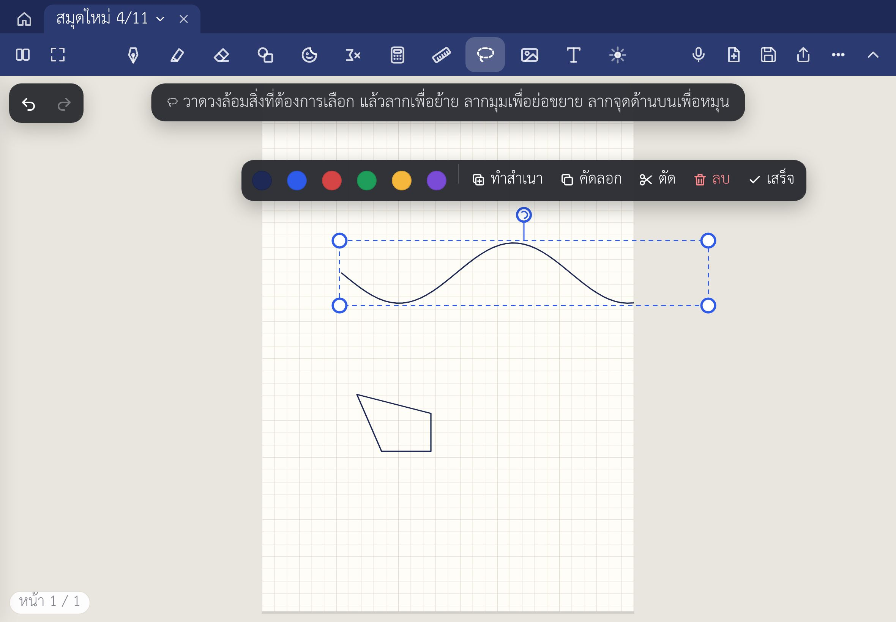
7รูปทรง ลูกศร และแผนผัง
แตะ รูปทรงและลูกศร แถวล่างจะมีแบบให้เลือก: เส้นตรง ลูกศร ลูกศรหักมุม เส้นโค้ง สี่เหลี่ยม วงกลม สามเหลี่ยม ข้าวหลามตัด แคปซูล และ มุมมน วาดด้วยปากกาจากมุมหนึ่งไปอีกมุม เหมาะกับทำ Mind map / แผนผังโยงความสัมพันธ์
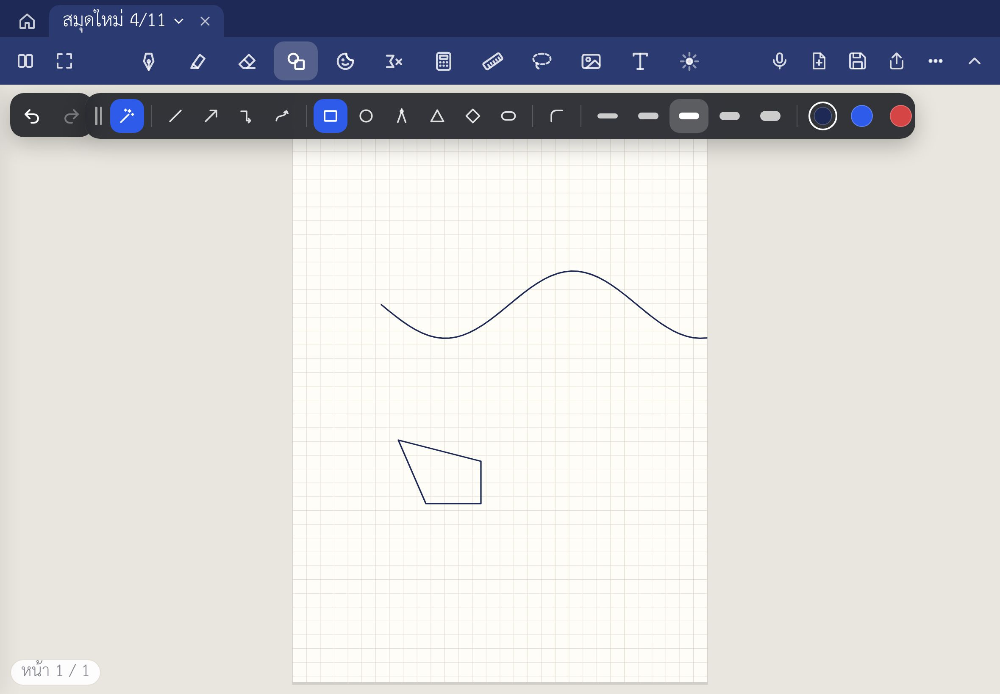
รูปทรงที่วาดแล้ว แตะที่เส้น 1 ครั้ง จะเปิดแถบแก้ไข: สีเส้น · พื้นที่ (ไม่เติม / สี / อ่อน–กลาง–เข้ม) · มุมมน · ทำสำเนา · ลบ
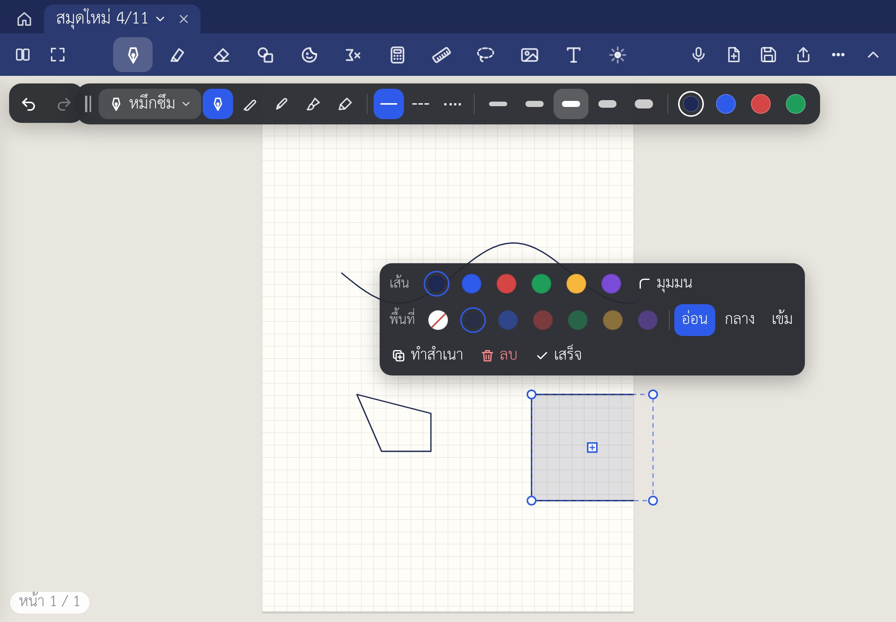
8แทรกรูป สติกเกอร์ ข้อความ
รูปภาพ
แตะ แทรกรูปภาพ เลือกรูปจากคลังภาพ รูปจะวางกลางหน้าพร้อมกรอบเลือก: ลากมุม = ย่อขยาย · จุดบน = หมุน · ครอป/ตัด = ตัดรูปเฉพาะส่วน (ตัดเป็นรูปร่างอิสระได้) · ไว้หลังสุด = ส่งรูปไปอยู่ใต้ลายมือ · คัดลอก · ทำสำเนา · ลบ
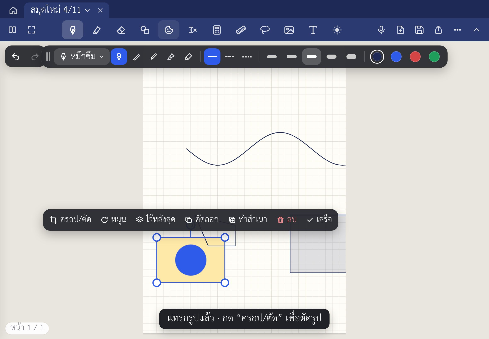
สติกเกอร์
แตะ สติกเกอร์ เลือกป้ายข้อความ (เก่งมาก! ยอดเยี่ยม ฯลฯ) หรืออีโมจิตามหมวด (คน สัตว์ สิ่งของ สถานที่) วางแล้ว แตะสติกเกอร์ เพื่อย่อขยาย หมุน หรือลบ
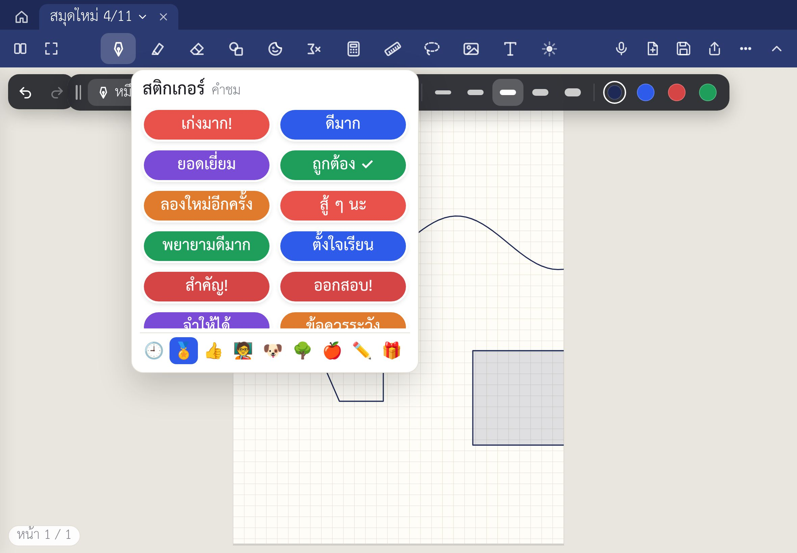
กล่องข้อความ
แตะ T แล้วแตะบนกระดาษเพื่อพิมพ์ แถวล่างปรับ ขนาด ตัวหนา และ สี แตะข้อความที่พิมพ์แล้วเพื่อแก้ ย้าย ย่อขยาย หมุน
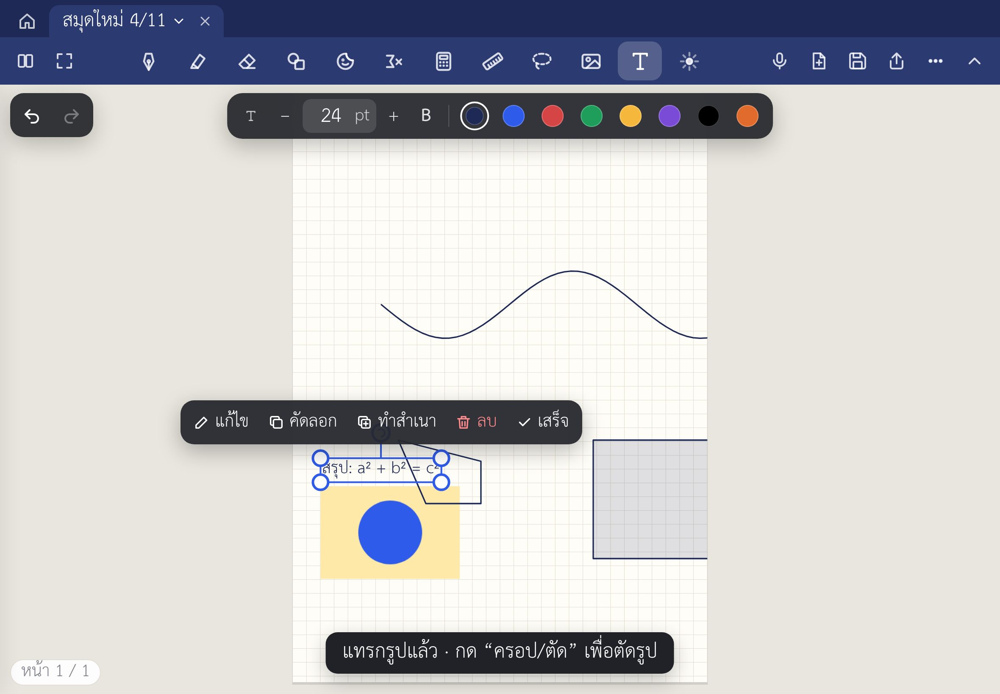
9คณิต: สมการ กราฟ เครื่องคิดเลข
ปุ่ม คณิต มีเมนู: เครื่องคิดเลขวิทยาศาสตร์ · แทรกสมการ (LaTeX) · แทรกกราฟ / ระบบพิกัด / เส้นจำนวน · ไม้โปรแทรกเตอร์ · ไม้บรรทัด · วงเวียน
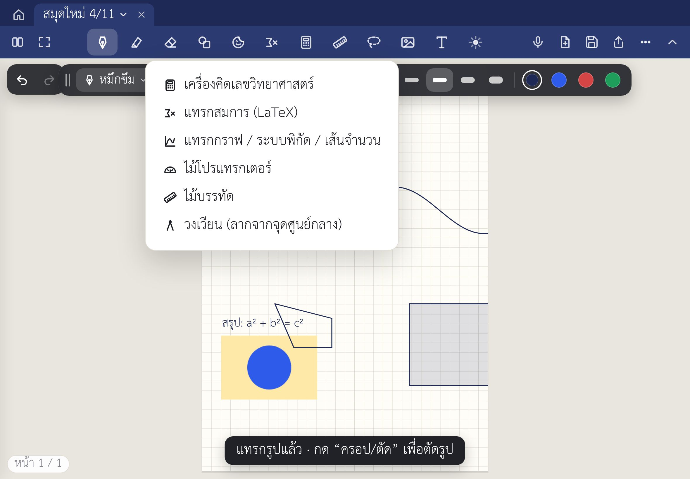
สมการ
พิมพ์แบบ LaTeX เช่น \frac{a}{b} \sqrt{x} x^2 \pi มีปุ่มสัญลักษณ์ช่วยกด ดูตัวอย่างสด เลือกสีและขนาดแล้วกด แทรก สมการจะเป็นวัตถุที่ย้าย/ย่อขยาย และ “แก้สมการ” ได้ภายหลัง
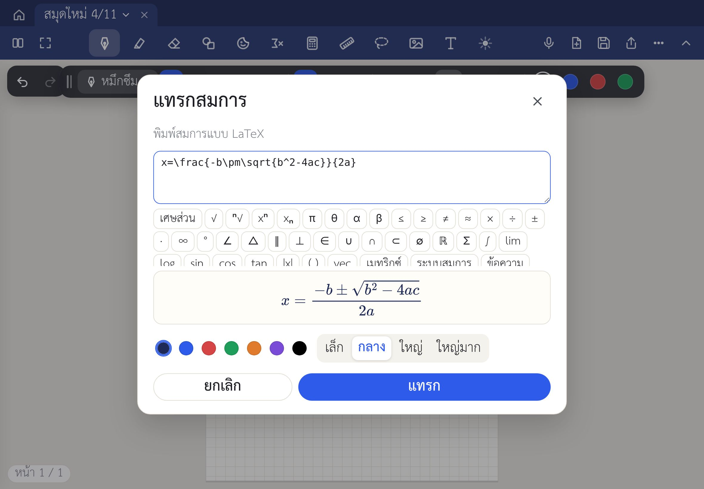
กราฟ / เส้นจำนวน
ใส่ช่วงแกน x, y และฟังก์ชัน y = … ได้ถึง 3 ฟังก์ชัน (เช่น x^2-3 2sin(x)) จุดบนแกน x ใส่เป็น -2, 1.5, 3o (o = จุดโปร่ง) หรือสลับเป็น เส้นจำนวน แทรกแล้วแก้ได้จากปุ่ม “แก้กราฟ”
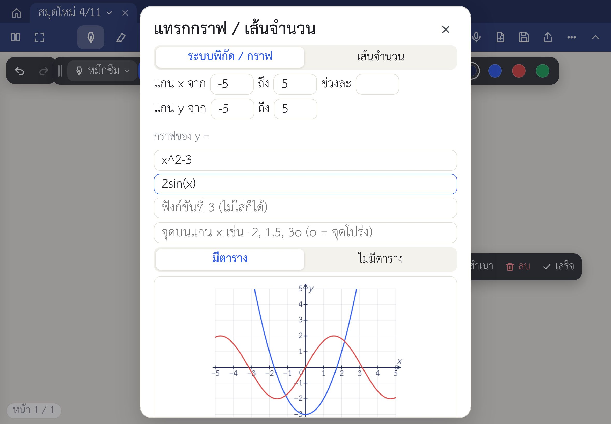
เครื่องคิดเลขวิทยาศาสตร์
แตะปุ่ม เครื่องคิดเลข หน้าต่างลอยลากย้ายได้ มี sin cos tan log ln √ x² xʸ ! π e และหน่วยองศา/เรเดียน ปุ่ม วางลงหน้า จะแทรกผลลัพธ์ลงกระดาษเป็นข้อความ
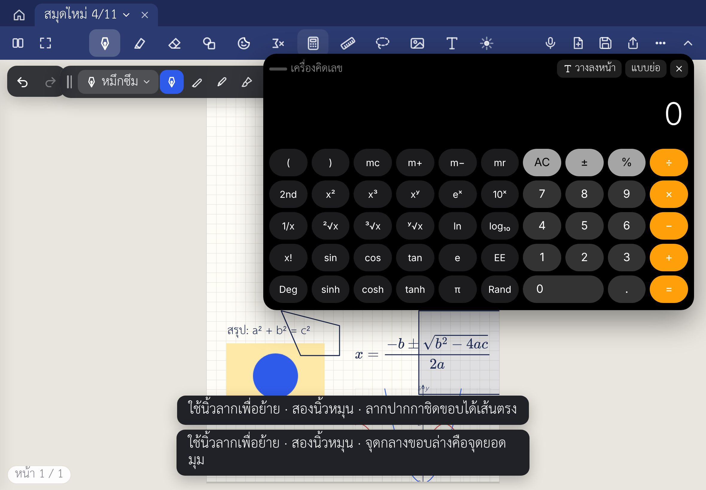
10ไม้บรรทัด ไม้โปรแทรกเตอร์ เลเซอร์
- ไม้บรรทัด: ใช้นิ้วลากย้าย สองนิ้วหมุน ลากปากกาชิดขอบจะได้เส้นตรงตามไม้บรรทัด แตะปุ่มซ้ำเพื่อเก็บ
- ไม้โปรแทรกเตอร์ (ในเมนูคณิต): จุดกลางขอบล่างคือจุดยอดมุม อ่านองศาได้สองทิศ
- วงเวียน (ในเมนูคณิต): ลากจากจุดศูนย์กลางออกไปเพื่อวาดส่วนโค้ง/วงกลม
- เลเซอร์พอยเตอร์: ชี้ให้เพื่อนดูโดยไม่ทิ้งรอย เลือกแบบเส้นหาง/จุด สี และขนาดได้ที่แถวล่าง
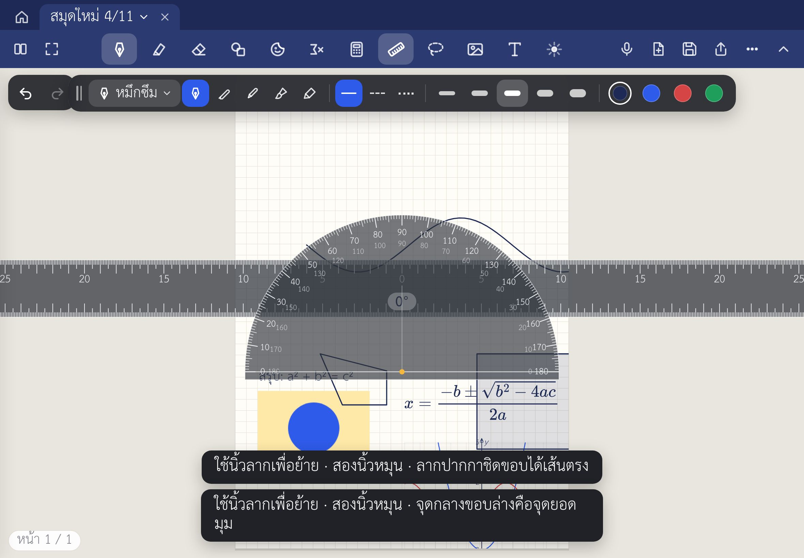
11อัดเสียง
แตะปุ่ม ไมค์ เพื่ออัดเสียงอธิบาย (เช่น อธิบายวิธีทำโจทย์ส่งครู) แตะซ้ำเพื่อหยุดชั่วคราวหรือหยุด เสียงจะผูกกับสมุดเล่มนี้ เปิดฟัง ดาวน์โหลด หรือแชร์ได้ที่ปุ่ม ส่งออก → เสียงที่อัดในสมุดเล่มนี้
12หน้า: เพิ่ม เลื่อน ซูม แทรก PDF
- เพิ่มหน้า: เลือกพื้นหลังและขนาด แล้ว “เพิ่มต่อจากหน้านี้” หรือ “เพิ่มไว้ท้ายสมุด” · แทรกไฟล์ PDF ต่อจากหน้านี้ ใช้เอาใบงานของครูมาเขียนทับ
- เลื่อนหน้าด้วยนิ้ว มุมล่างซ้ายบอก “หน้า x / y”
- ภาพย่อหน้า: เปิดแถบซ้ายเห็นทุกหน้า แตะเพื่อไป กดค้างเพื่อย้ายลำดับ มีปุ่มเพิ่ม/ทำสำเนา/ลบหน้า
- แสดง 2 หน้าคู่ (ตั้งค่า) เหมาะกับจอใหญ่หรือแนวนอน
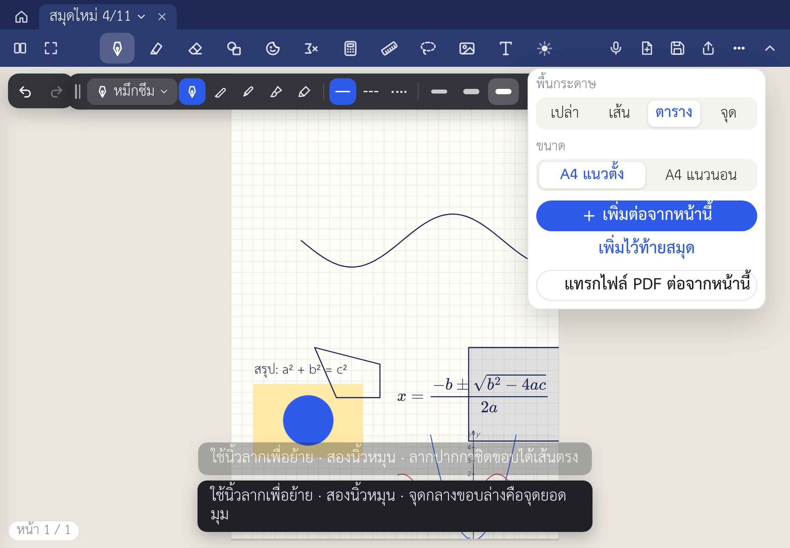
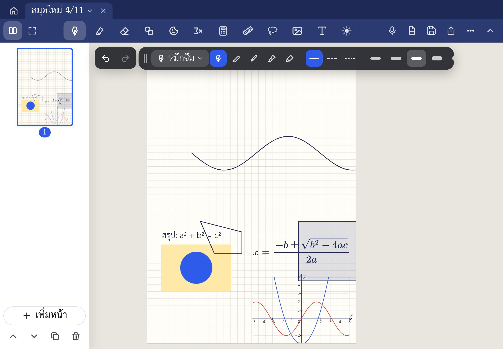
13ส่งงานให้ครู / ส่งออก PDF
- แตะปุ่ม ส่งออก (ลูกศรชี้ขึ้น) → ส่งงานให้ครู
- เลือกหน้าที่จะส่ง: แตะภาพย่อทีละหน้า หรือพิมพ์ช่วง เช่น 1-3, 5 · เปิด/ปิด “รวมพื้นกระดาษ (เส้น/ตาราง)”
- แตะ ส่งงานให้ครู จะได้ไฟล์ PDF พร้อมหน้าต่างแชร์ของ iPad → เลือกส่งทาง Google Classroom, LINE, AirDrop หรือบันทึกไปยังไฟล์
เมนูเดียวกันมี ส่งออกเป็น PDF (เก็บไว้เอง/พิมพ์) และ เสียงที่อัดในสมุดเล่มนี้
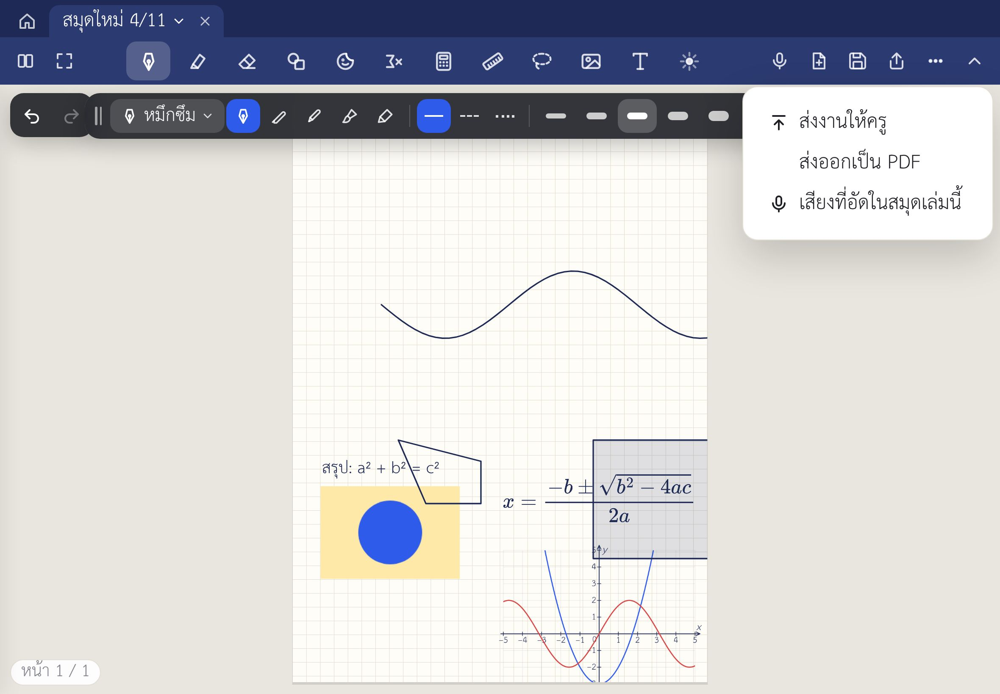
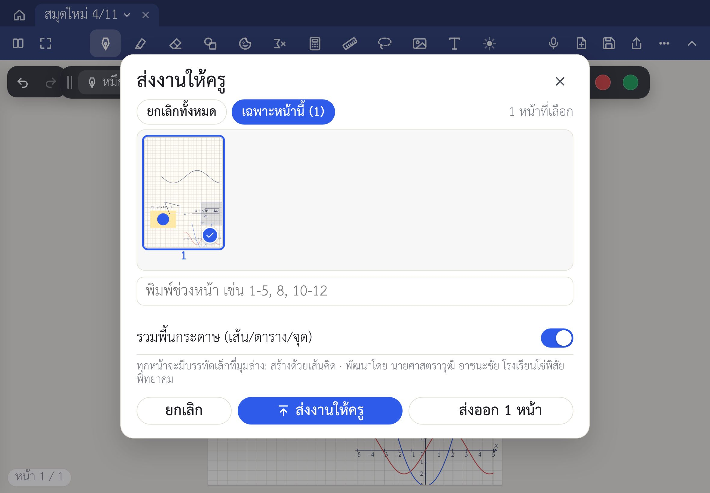
14บันทึกและสำรองข้อมูล
- แอปบันทึกให้อัตโนมัติทุกครั้งที่เขียน ไม่ต้องกดบันทึก เปิดแอปครั้งต่อไปจะอยู่ที่หน้าเดิม
- สมุดเก็บอยู่ในเครื่องนี้เท่านั้น ถ้าเปลี่ยนเครื่องหรือล้างเครื่อง ต้องมีไฟล์สำรอง
- บันทึกเป็นไฟล์ในเครื่อง (ปุ่มรูปแผ่นดิสก์): เก็บสมุดเล่มนี้เป็นไฟล์ .senkid.json ลงใน “ไฟล์” / iCloud Drive · จุดเหลืองบนปุ่ม = มีส่วนที่ยังไม่ได้บันทึกลงไฟล์
- สำรองสมุดทั้งหมด (เมนู ⋯ หน้าหลัก): ได้ไฟล์เดียวรวมทุกเล่ม ควรทำเป็นระยะ เช่น ทุกสัปดาห์
- เปิดไฟล์ ที่หน้าหลัก เพื่อนำสมุดหรือไฟล์สำรองกลับมาเขียนต่อ
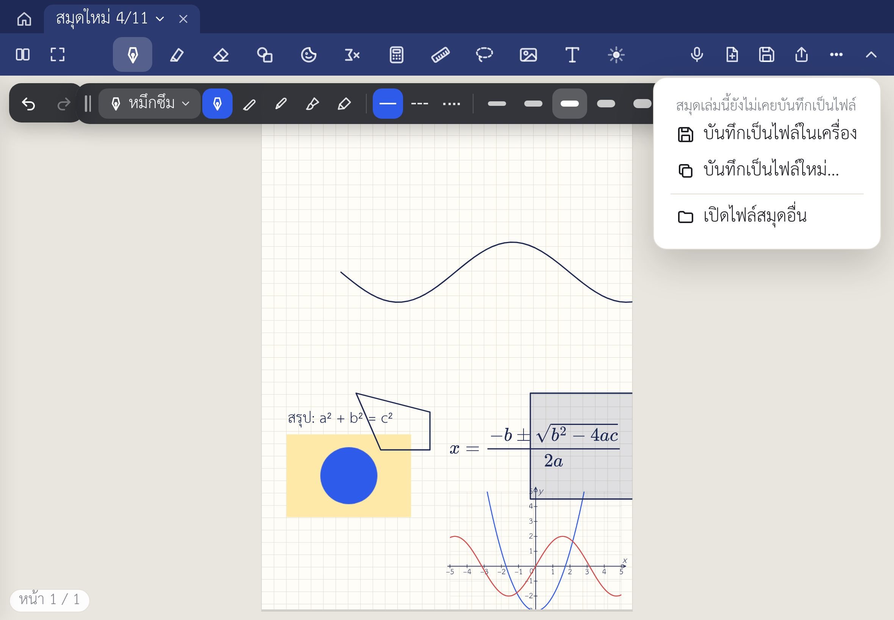
15โหมดนำเสนอ และย้ายแถบเครื่องมือ
- แตะ ซ่อนแถบเครื่องมือ (ปุ่ม ˄ ขวาสุด) เพื่อเข้าโหมดนำเสนอ: กระดาษเต็มจอ เหลือแถบเล็กที่มีเครื่องมือครบ ลากไปวางตรงไหนก็ได้ ชิดขอบซ้าย/ขวาจะเป็นแผงแนวตั้ง · แตะ × เพื่อออก
- ในโหมดปกติ แถบเครื่องมือแถวล่าง ก็ลากย้ายได้: จับที่ ‖ ซ้ายสุดหรือลากตัวแถบ ชิดขอบซ้าย/ขวาจะตั้งเป็นแนวตั้ง ลากกลับไปวางกลางด้านบนเพื่อคืนที่เดิม
- ตั้งค่า → ตำแหน่งแถวบน (บน / ซ้าย / ขวา) ตามถนัดมือ
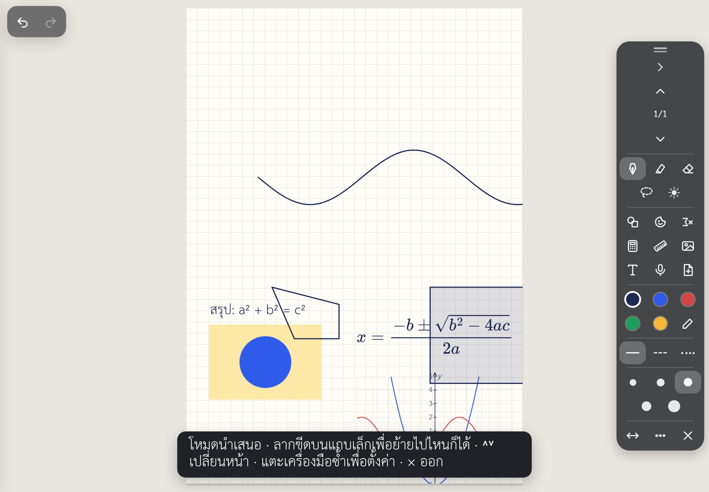
16ตั้งค่า
เมนู ⋯ → ตั้งค่าทั้งหมด ที่ควรรู้:
- ธีม สว่าง/มืด · ฟอนต์ของแอป · ตำแหน่งแถบเครื่องมือ
- เขียนด้วยนิ้ว (เครื่องไม่มีปากกา) · แปลงเป็นรูปทรงอัตโนมัติ · ขีดฆ่าเพื่อลบ · เติมสีรูปทรง
- แสดง 2 หน้าคู่ · โหมดประหยัด (เครื่องรุ่นเก่า ลื่นขึ้น)
- ใช้งานแบบ ครู/นักเรียน
- ข้อมูล: ดูพื้นที่ที่ใช้ และปุ่มสำรอง
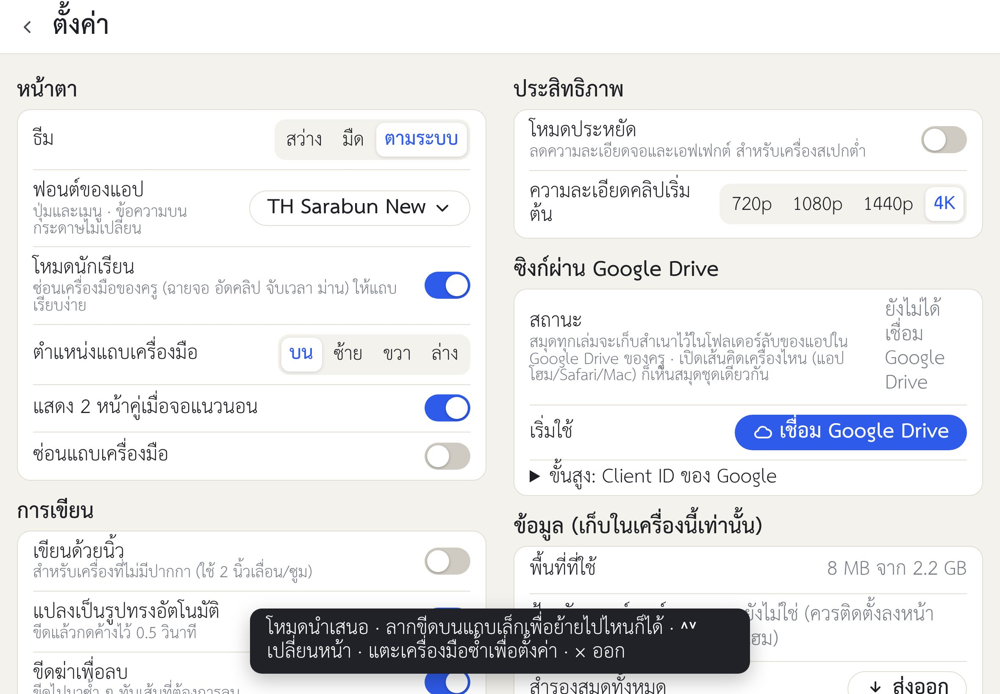
เมนู ⋯ ในสมุดยังมี พอดีหน้าจอ · ส่งออก PDF · เพิ่มหน้า · ส่งงานให้ครู · วิธีใช้
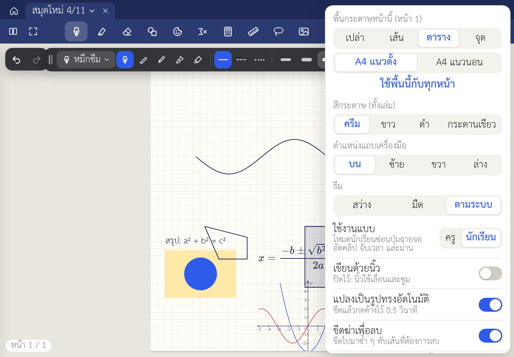
17คำถามที่พบบ่อย
เขียนแล้วไม่ติด / นิ้วเขียนไม่ได้ — ปกติแอปให้ปากกาเขียน นิ้วเลื่อน ถ้าไม่มีปากกา เปิด “เขียนด้วยนิ้ว” ในตั้งค่า
เผลอลบ/เขียนผิด — แตะจอด้วย 2 นิ้ว (ย้อนกลับ) ทำได้หลายครั้ง
รูป/สติกเกอร์ย่อขยายไม่ได้ — แตะที่รูป 1 ครั้งให้ขึ้นกรอบก่อน แล้วลากจุดมุม หรือใช้สองนิ้วบีบบนรูป
อยากเขียนทับใบงานของครู — ขอไฟล์ PDF จากครู แล้วเปิดด้วย “เปิดไฟล์ / PDF” หรือ “เพิ่มหน้า → แทรกไฟล์ PDF”
เปลี่ยน iPad / ลงเครื่องใหม่ — ก่อนเปลี่ยน กด “สำรองสมุดทั้งหมด” เก็บไฟล์ไว้ใน iCloud แล้วไปเปิดไฟล์ในเครื่องใหม่
แอปช้าเมื่อหน้าเยอะ — เปิด “โหมดประหยัด” ในตั้งค่า หรือแยกสมุดเป็นหลายเล่มตามบท
ส่งงานแล้วครูเปิดไม่ได้ — ไฟล์ที่ส่งเป็น PDF มาตรฐาน เปิดได้ทุกเครื่อง ตรวจว่าแชร์ไฟล์ครบและไม่ได้ส่งเป็นไฟล์ .json (ไฟล์นั้นคือไฟล์สำรอง ใช้เปิดในเส้นคิดเท่านั้น)